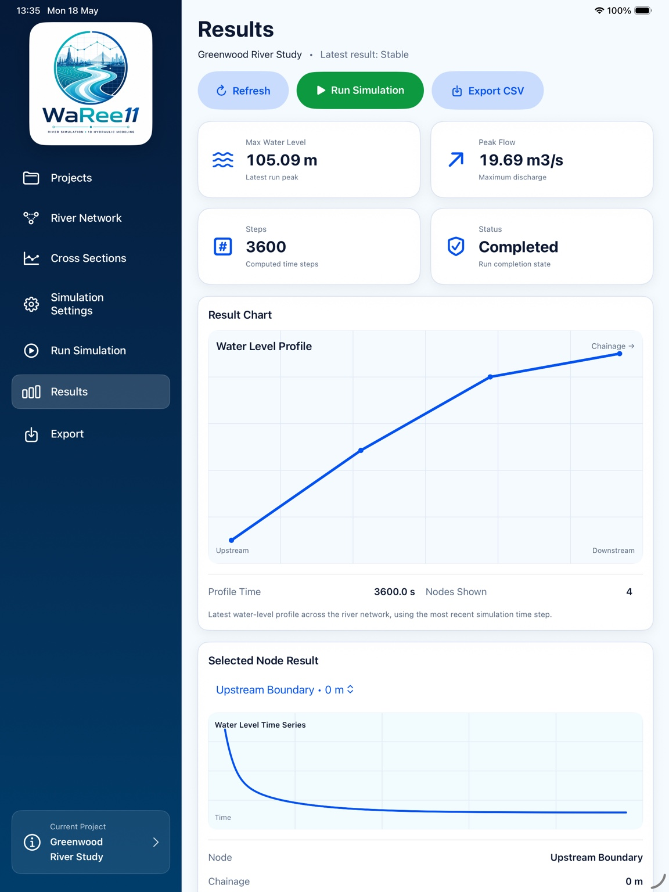

01
River Network Builder
Define reaches, links, nodes, and project structure with a clear visual
river network workflow designed for touch interaction and quick iteration.
 02
02
Cross Section Editor
Build and refine channel geometry, roughness, and section properties in a format
that supports teaching, verification, and rapid model inspection.
 03
03
Simulation Settings
Configure hydraulic runs with time step controls, duration, solver-related setup,
and project parameters in one coherent panel.
 04
04
Hydraulic Solver Engine
Support structured computation flows for 1D river simulation, creating a strong
foundation for stable modeling and future solver refinement.
Geometry
Boundary Setup
Hydraulic Solve
05
Results Visualization
Review model outcomes through charts, profiles, and focused screen layouts that
help teams interpret results without clutter.

06
Scenario Comparison and Diagnostics
Compare runs, inspect differences, and use diagnostics-friendly layouts to support
design review, education, and early-stage water resources studies.
Scenario A
Scenario B
Delta Review